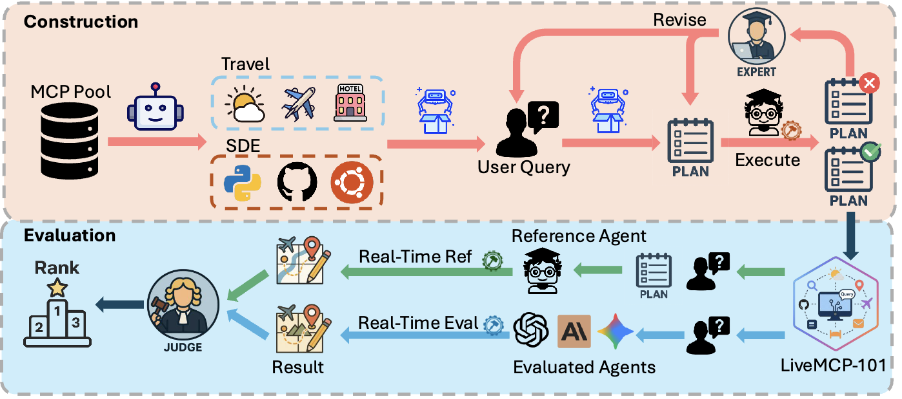
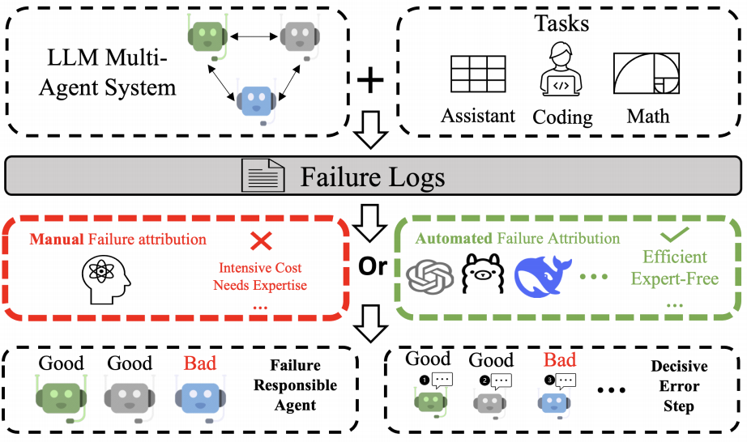
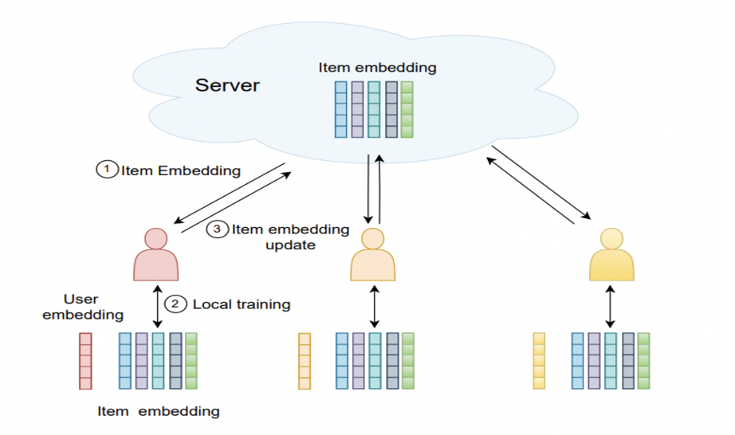
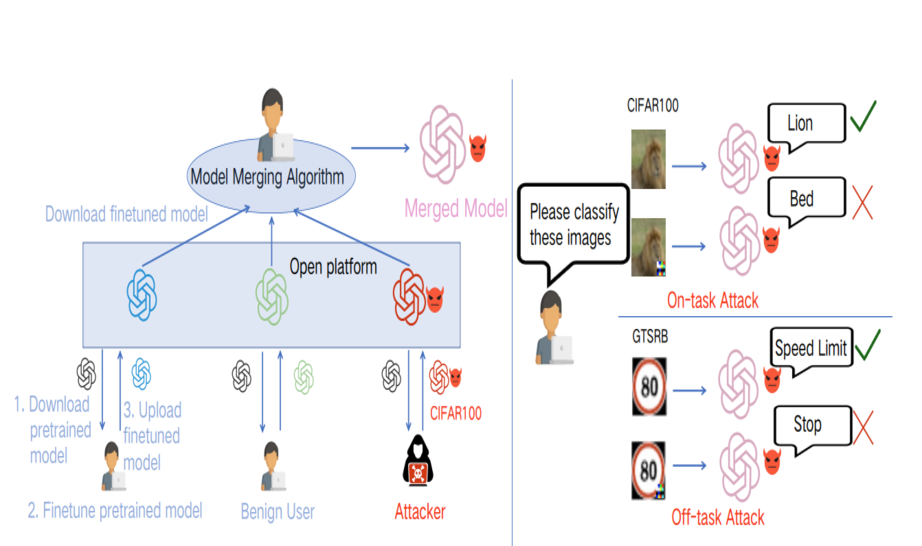
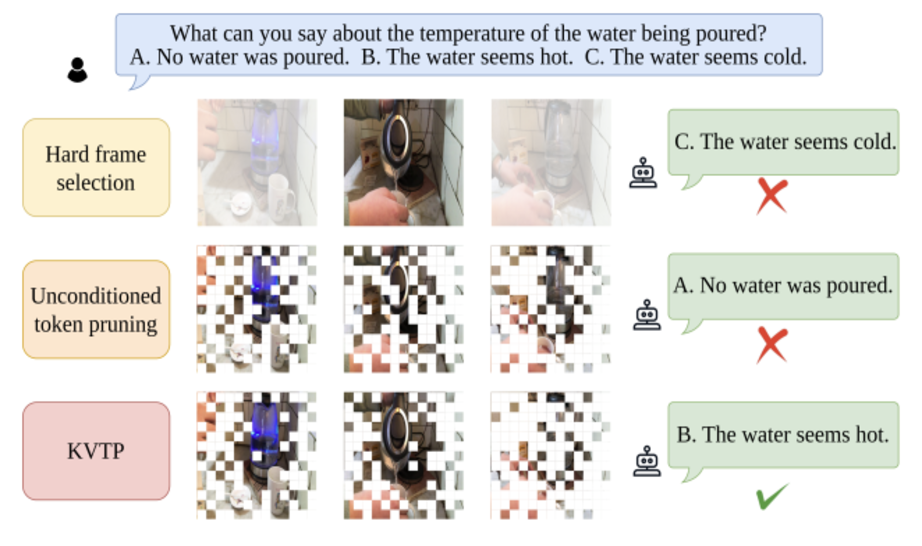
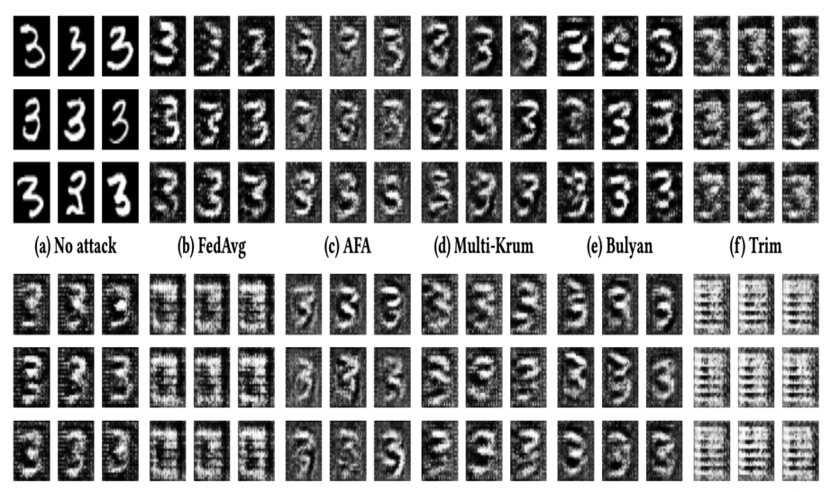

About
Education
Experiences
Selected Publications (* Equal Contribution)

LiveMCP-101: Stress Testing and Diagnosing MCP-enabled Agents on Challenging Queries
Preprint 2025

Which Agent Causes Task Failures and When? On Automated Failure Attribution of LLM Multi-Agent Systems
🏆 ICML 2025 Spotlight

Poisoning Federated Recommender Systems with Fake Users
WWW 2024

LoBAM: LoRA-Based Backdoor Attack on Model Merging
ICLR 2025 Workshop

Keyframe-oriented Vision Token Pruning: Enhancing Efficiency of Large Vision Language Models on Long-Form Video Processing
ICCV 2025

Robust Federated Learning Mitigates Client-side Training Data Distribution Inference Attacks
WWW 2024
Teaching
Teaching Assistant-
ECE 661: Computer Engineering Machine Learning and Deep Neural Nets - Fall 2025
Awards
- Duke ECE Travel Fellowship 2025
- Excellent Student Scholarship Gold (Top 3%) 2023
- Excellent Student Scholarship Gold (Top 3%) 2021
- First Prize of Chinese Physics Olympiad (Top 0.04%) 2019
Top